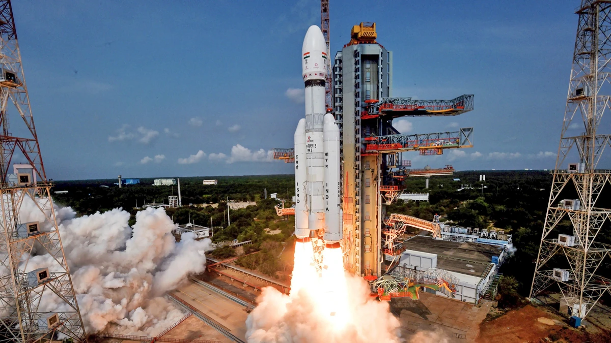
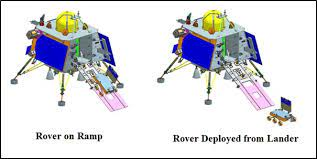
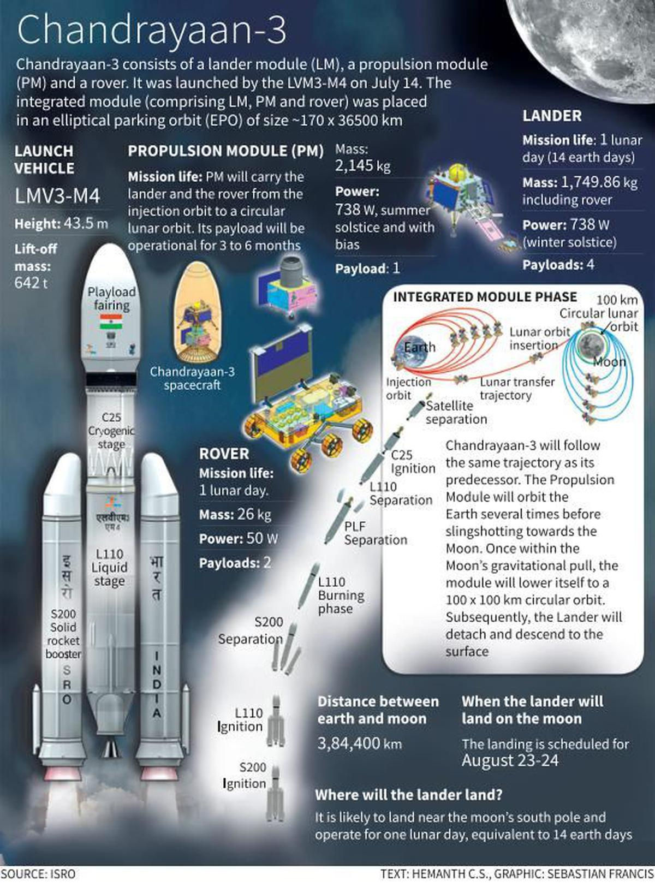
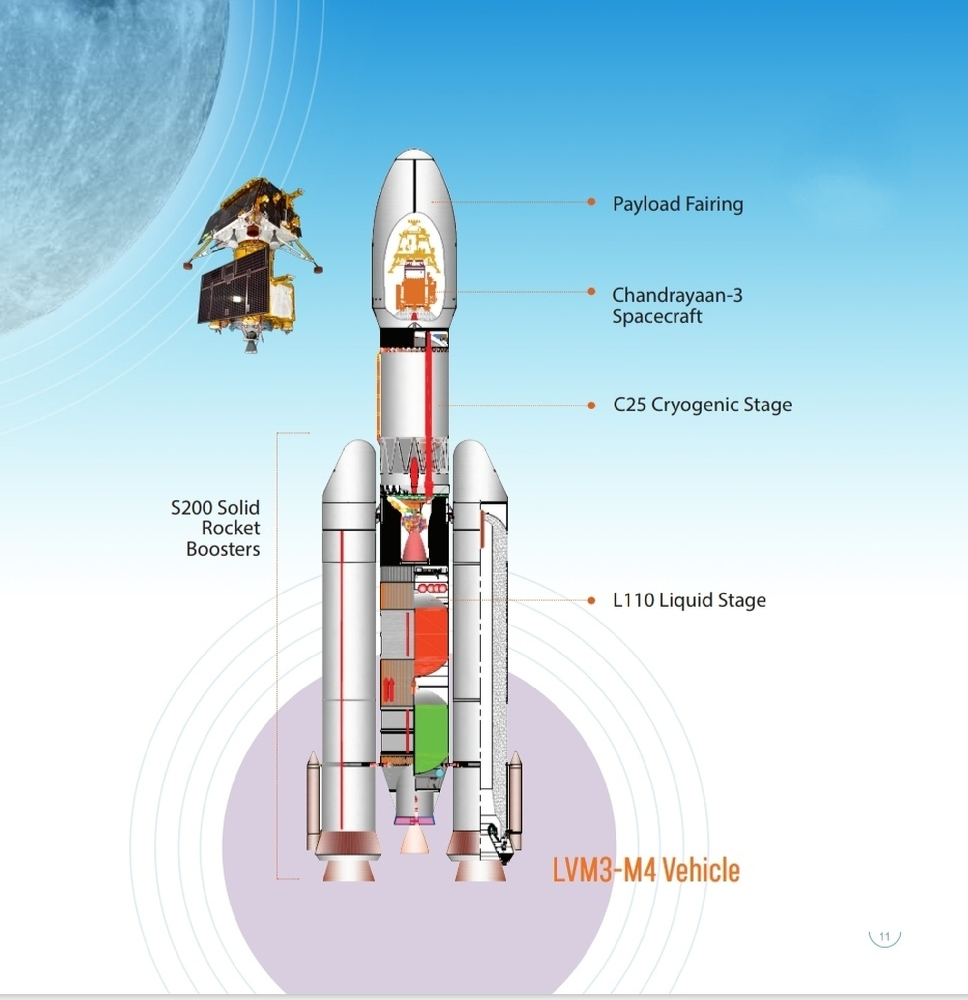

All Information
Mission:
Chandrayaan 3 is a lunar exploration mission by the Indian Space Research Organisation (ISRO). It is the third and most recent mission in the Chandrayaan programme.
Launch:
Chandrayaan 3 was launched on 14 July 2023, at 2:35 pm IST from the Satish Dhawan Space Centre in Sriharikota, Andhra Pradesh, India.
Image:---
Lander:
The Chandrayaan 3 lander is named Vikram. It is designed to soft land on the lunar surface and deploy the Pragyan rover. The lander is about 1.4 meters tall and weighs about 1,475 kilograms. It has four legs and a landing gear that will help it to land safely on the moon. The lander also has a number of scientific instruments, including a camera, a spectrometer, and a magnetometer.
Image:---

Rover:
The Chandrayaan 3 rover is named Pragyan. It is designed to move around the lunar surface and conduct scientific experiments.The rover is about 1 meter long and weighs about 27 kilograms. It has six wheels and a solar panel that will power it. The rover also has a number of scientific instruments, including a camera, a spectrometer, and a seismometer.
Image:---
Scientific objectives: The scientific objectives of Chandrayaan 3 include:
Studying the lunar surface and subsurface
Investigating the history of water on the moon
Searching for potential resources on the moon
Image:---
Propulsion module: The Chandrayaan 3 propulsion module is designed to carry the lander and rover to the moon. It also has a payload called SHAPE, which will study the Earth from lunar orbit. The propulsion module is about 4 meters long and weighs about 2,200 kilograms. It has four engines that will propel it to the moon. The propulsion module also has a number of scientific instruments, including a camera, a spectrometer, and a magnetometer.
Image:---

The launch vehicle:
The Chandrayaan 3 mission was launched by the GSLV Mk III rocket. The GSLV Mk III is a three-stage rocket that is capable of carrying a payload of up to 4,000 kilograms to low Earth orbit. The GSLV Mk III was developed by the Indian Space Research Organisation (ISRO).
Image:---
The history of the Chandrayaan programme: The Chandrayaan programme is India's first lunar exploration programme. It was launched in 2008 with the goal of studying the moon's surface and subsurface. The first mission in the programme, Chandrayaan-1, was launched in 2008. It was a successful mission that made a number of important discoveries about the moon. The second mission in the programme, Chandrayaan-2, was launched in 2019. It was also a successful mission, but it did not land on the moon as planned. Chandrayaan-3 is the third and most recent mission in the programme.
The technical challenges of landing a spacecraft on the moon: Landing a spacecraft on the moon is a very challenging task. The moon has no atmosphere, so there is no air resistance to slow down the spacecraft. This means that the spacecraft must have a very powerful rocket engine to slow itself down enough to land safely. The moon also has a very rough surface, so the spacecraft must be able to withstand a lot of impact.
The scientific discoveries that Chandrayaan 3 could make: Chandrayaan 3 could make a number of important scientific discoveries about the moon. It could study the lunar surface and subsurface in more detail than ever before. It could also investigate the history of water on the moon. This is important because water is essential for life, and it could be a potential resource for future human exploration of the moon. Chandrayaan 3 could also search for potential resources on the moon, such as metals and minerals.
The benefits of India's lunar exploration program: India's lunar exploration program has a number of benefits. It helps to improve India's space technology and scientific capabilities. It also helps to promote India's soft power and image as a global leader in space exploration. The program also has the potential to generate new economic opportunities for India, such as in the mining and tourism sectors.
In December 2019, it was reported that ISRO requested the initial funding of the project, amounting to ₹75 crore (US$9.4 million), out of which ₹60 crore (US$7.5 million) will be for meeting expenditure towards machinery, equipment and other capital expenditure, while the remaining ₹15 crore (US$1.9 million) is sought under revenue expenditure head.
Confirming the existence of the project, ISRO's former chairman K. Sivan stated that the estimated cost would be around ₹615 crore (equivalent to ₹721 crore or US$90 million in 2023).
Mission executives
ISRO Chairperson: S.Somanath
Mission Director: S. Mohanakumar
Associate Mission Director: G. Narayanan
Vehicle Director: Biju C Thomas
Associate Vehicle Director: P. K. Sudeesh Kumar
Spacecraft Director: P. Veeramuthuvel